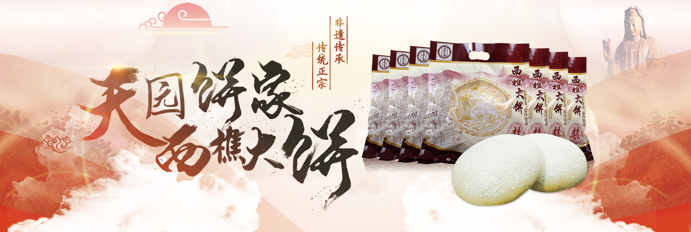

外型圆大，大者有2市斤，一般也重半斤，也一两左右的小饼。它颜色白中微黄，不起焦，入口松软，清香甜滑，食后不觉干燥，可与鸡蛋糕比美

喜饼喜糖是婚嫁的传统食品 尽管时下婚礼形式越来越不拘一格，但买喜饼，送喜饼，仍是不少新人的“规定动作”。 在馅料口味上，传统的喜饼大体分为四种： 西樵大饼、核桃酥、鸡蛋糕、红菱、白菱、龙凤喜饼 如今随着岁月变迁，又出现了五仁馅、冬蓉、豆蓉、叉烧等的新鲜口味。 这些传统风味的喜饼，一直以来，都较受长辈们喜爱。